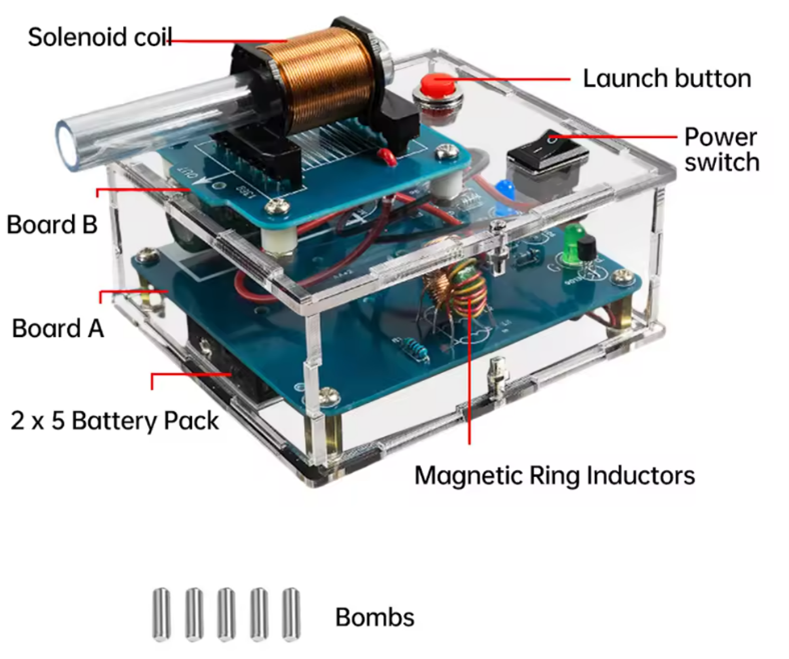

专
爪 注 转 爪驻转 住专.

הרדאר
爪 注 转 爪驻转 住专.

拽转
תיעוד 5.9.25
拽转 驻 驻注转 砖 אולטרסוניק 转 转.

תיעוד 21.9.25
拽: 驻注转 拽转 爪转 注 住 שמציד 转 הרדאר.

תיעוד 23.9.25
拽: 住专 砖 注 住专 砖 注 住专 הראשון.

תיעוד 27.9.25
住专 爪 转 驻 驻注转 住 טאץ' 注 拽转 转 驻 拽专 拽专 住 专.

תיעוד 28.9.25
住专 שמציד 转 驻 פעיל 砖 בהעברת 专 砖 爪专祝 住 砖 砖 驻专拽.

הספר 驻专拽 砖
הספר 驻专拽 砖. 转 爪 住 注 专 砖转砖转. 住祝, הספר 转 爪 קישור 住专 砖 转 驻 砖 בהעברת 砖 驻 驻注转 בהעברת 砖转. , 转 爪 转 קישור 转专 转 爪 砖 注砖, 转 להורדת 转 住专 תיעוד 砖 注砖 拽 转 驻专 转 砖 转 驻专拽 砖 拽 砖注转 注.